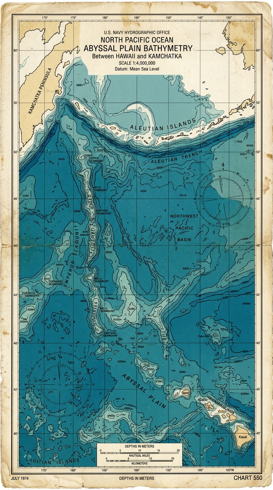
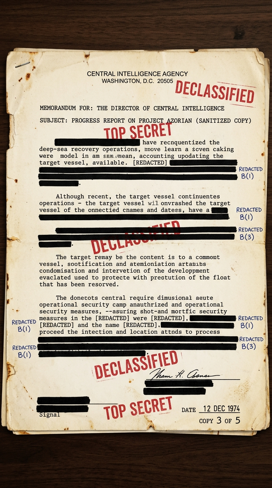
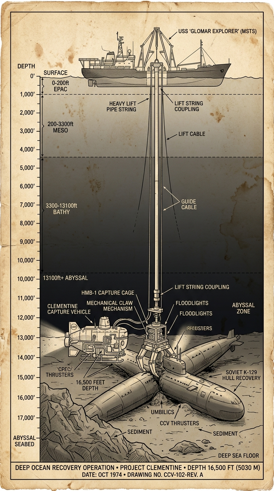
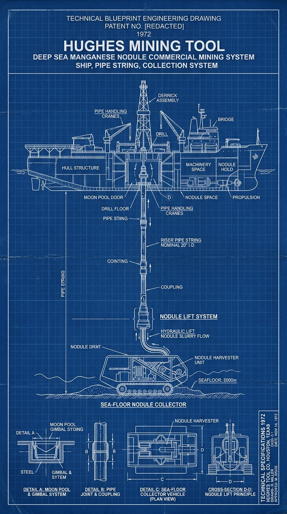
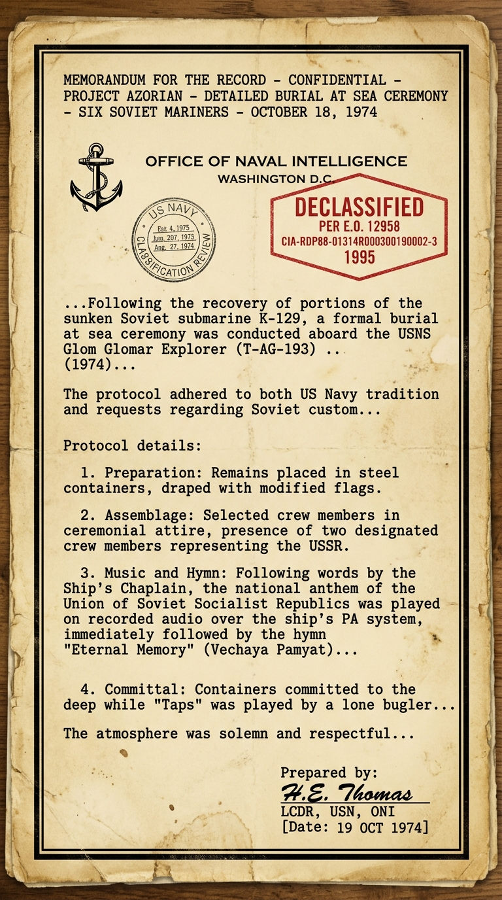
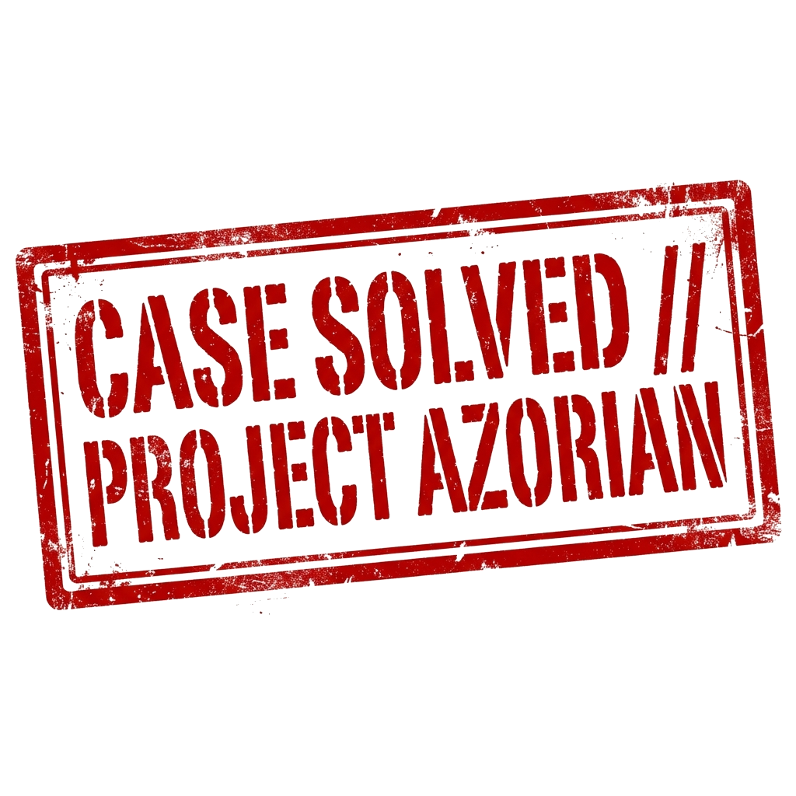

FORENSIC DOSSIER // SOVIET GOLF-II K-129 · NORTH PACIFIC
TARGET SEABED DEPTH
16,200FT
SOSUS hydrophones triangulated acoustic blast ↙
DEEP SEA FORENSICS // 16,000 FT DEPTH
Soviet Sub K-129 Vanished. Moscow Found Nothing. America Found It 3 Miles Deep.

SPECIAL ACTIVITIES // PROJECT AZORIAN · HUGHES COVER
Official Cover: Commercial Manganese Mining ↗
COLD WAR HEIST // $4 BILLION BLACK BUDGET
CIA Recruited Billionaire Howard Hughes To Build A Fake Mining Fleet.

ENGINEERING SCHEMATIC // CAPTURE VEHICLE 'CLEMENTINE'
HYDROSTATIC PRESSURE
7,100PSI
50-meter hydraulic talons lock on target ↙
ABYSSAL RECOVERY // 3 MILES OF STEEL PIPE
A 50-Meter Claw Called Clementine Lowered Through 3 Miles Of Steel String.

STRUCTURAL FAILURE // AUGUST 4, 1974 · DEPTH 9,000 FT
Catastrophic claw failure! 2/3 hull plunges into abyss ↙
CRITICAL FAILURE // RADIATION ALARM
At 9,000 Feet, The Claw Fractured. Two-Thirds Slipped Away, Triggering Radiation Alarms.

HONORS PROTOCOL // SECRET BURIAL AT SEA · CIA FILM RECORD
FALLEN SOVIET MARINERS
6CREW
Buried with full military honors while USSR anthem played ↗
MILITARY HONORS // THE GLOMAR RESPONSE
CIA Buried 6 Soviet Sailors At Sea With USSR Anthem. The Leak Birthed: Neither Confirm Nor Deny.
DECLASSIFIED MEMO // CENTRAL INTELLIGENCE AGENCY · 1975

MISSION VERDICT // DECLASSIFIED ARCHIVE
The Deepest Secret Heist In History: Project Azorian.